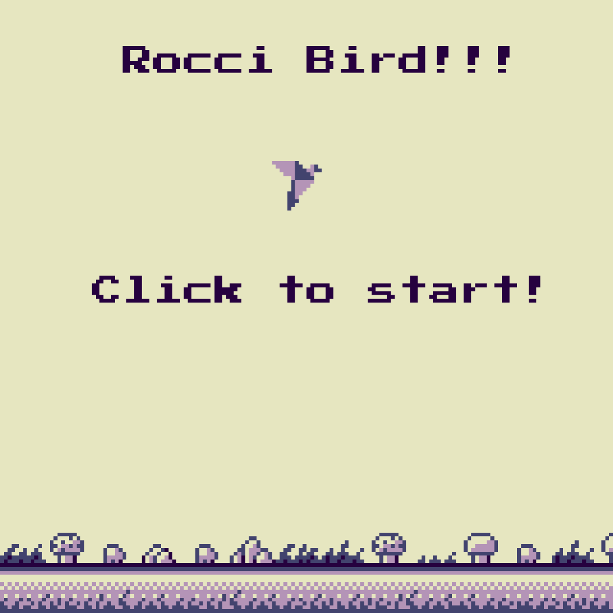
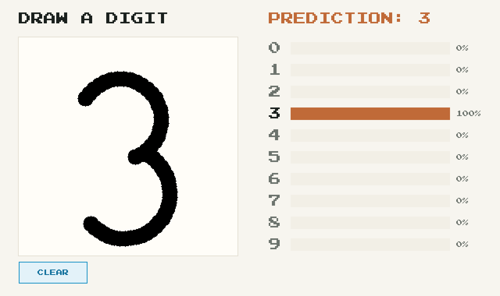

culebra
A dynamically-typed scripting language that runs three ways from one source: VM interpreter, LLVM JIT, and AOT compiler. culebra is a beutiful island in Puerto Rico. 🏝️
let people = [ {name: 'Taro', greeting: 'Konnichiwa'}, {name: 'John', greeting: 'Hello'}, {name: 'Ada', greeting: 'Bonjour'}, ] for p in people.sorted_by(|p| p.name) { println("{p.greeting}, {p.name}!") }
Try culebra on your machine
Paste this into a terminal on macOS (Apple Silicon) — it downloads
culebra and writes a one-line program to hello.cul, then
runs that same source file three ways: as a script, JIT-compiled, and
built into a standalone binary — all three print the same line.
curl -fsSL https://github.com/yhirose/culebra/releases/latest/download/culebra-macos-arm64.tar.gz | tar xz
export PATH="$PWD/culebra-macos-arm64:$PATH"
culebra --version
cat > hello.cul <<'EOF'
println("Hello!")
EOF
culebra hello.cul # interpreter
culebra --jit hello.cul # JIT
culebra build hello.cul -o hello && ./hello # AOT: compile once, ship the binary
Linux (x86-64): swap the first line for
culebra-linux-x64.tar.gz. Windows and a permanent
install are in the
README.
Set up your dev environment
Optional — this one also touches your editor's config
(VSCode/Vim/Neovim) and writes AGENTS.md/CLAUDE.md
into the current directory, so it isn't bundled into the block
above:
culebra init
culebra init installs syntax highlighting and the
debug adapter for whichever of VSCode, Vim, or Neovim it finds on
this machine, and adds coding-agent instructions to
AGENTS.md (or CLAUDE.md/.github/copilot-instructions.md
if one already exists) — reopen hello.cul afterward
and the highlighting is already on.
One executable, every tool
The same binary that just ran hello.cul also
builds, tests, lints, formats, and documents it —
culebra build,
test,
lint,
fmt,
dap,
docs,
serve,
init, and
wrap
are all built in. Nothing else to install.
The standard library is baked in too — JSON, HTTP, Tensor, Canvas, and the rest are bound before the program runs. No package manager, no lockfile.
For the things you want to make
A desktop app
Desktop.run({
title: "Hello from culebra",
assets: Embed.dir("dist"), # index.html, favicon.ico, ...
routes: fn (srv) {
srv.get("/api/hello", fn (req) {
"hi from the embedded server"
})
},
})
That's the whole app — a local server, your UI (baked in — see Embedded assets in the README), and the Desktop/Webview that shows it, shipped as one native binary. See Building a desktop app for more.
A retro game

Sprites, collision, chiptune audio — all Canvas, running live in your browser — source. Click to play. Ported from Brendan Hansknecht's Roc/WASM-4 demo (art by Luke DeVault), from Luke Boswell's roc-wasm4 platform, UPL-1.0 licensed.
A neural network

Handwritten-digit recognition, end to end in culebra: a small MLP trained with the built-in Tensor autograd (training script), the pad and the probability chart drawn with Canvas — source. Draw a digit.
A C++ host
#include <culebra.h> #include <stdlib_interp.h> int main() { auto env = culebra::environment(); // stdlib bound std::string src = "1 + 2"; std::vector<std::string> msgs; auto ast = culebra::parse("<inline>", src, msgs); culebra::Value val; culebra::interpret(ast, env, val, msgs, culebra::Debugger()); // val.to_long() == 3 }
No LLVM dependency — the interpreter drops straight into a C++23 host through a minimal environment API. See Embedding in a C++ host in the README for the JIT path, threading, and host-function registration.